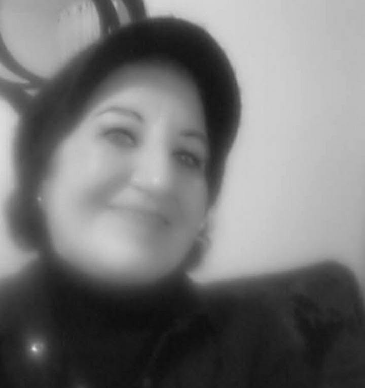

Je suis devenu flamme
A Nadya Benamar
Ô voix qui m’interpelles au bord du silence,
Je ne suis pas né…
Je suis devenu.
De vague en vague,
J’ai appris l’éloignement.
Des étoiles,
J’ai pris la chute et l’éclat.
Des aubes incertaines,
J’ai gardé le frisson d’exister malgré tout.
Oui, j’ai aimé dans l’insolence,
J’ai serré le doute comme une vérité brûlante,
Et les chants trompeurs des sirènes
Ont fait de mon cœur un rivage brisé.
Je suis fils du désert et des tempêtes,
J’ai défié le soleil
Jusqu’à ce que ma peau devienne mémoire.
Et les mots…
Ah, les mots—
Ils ne m’ont pas trahi,
C’est moi qui les ai rendus trop humains.
Je suis né pour tomber et me relever
Dans chaque nuage déchiré,
Dans chaque rêve qui fuit entre les doigts.
Mes délires sont des feux,
Mes tourments, des racines.
Mais écoute—
Sous les ruines, quelque chose respire encore.
Un souffle, oui…
Mais suffisant pour incendier la nuit.
Ô toi qui me nommes naufragé,
Sache que je suis aussi la mer.
Je suis la brûlure et la lumière,
La perte et l’élan.
Et la flamme ?
Elle ne demande pas jusqu’où elle brûle—
Elle brûle, simplement.
Et tant que je brûle,
Je suis.
Djamel Metref
At Yenni le 1 avril 2026 à 3 h du matin

← Tous les poèmes